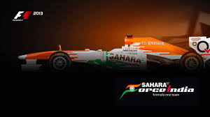

Lovin Sport's
Cricket Academy$1500
This cricket academy is a boon for all those children who are yet not able to tap into their talent pools and pursue their dream to accomplish something big into this world of cricket. We come from a country where cricket is one of the first few sports being taught as a religion or as if its imbedded in their genes. To think that some of the biggest cricket players have come from the streets of these unknown cities where just a bat and a ball was enough to excite a bunch of kids for the game of cricket, is enough an inspiration for us to create and establish an academy that facilitates your growth with proper equipment and coaching. We present to you an academy as big as 15,175 square meters, enough to encompass about 4000 yearners. We invite you all to join this academy if you have the desire and the fire to perfect your swings or catches or ultimately be someone in the world of cricket.
Tennis & Squash Court$1200
Tennis is a sport that is not only beneficial for your cardiovascular heath, but gives you the benefits of rigorous legs, arms and upper body training. The courts are on par with international standards and make it one of the finest sport facilities among clubs in Jaipur.A sport to teach you focus Squash is a great way to build stamina. The wood-floored squash court is built on par with international standards. It is located adjacent to the billiards room. Sweat it out at the best sports club in Jaipur.
Badminton Court & Table Tennis$900
Indulge in the aerobic sport activity and burn those calories off. Badminton is a great way to exercise while having fun. The GrassField club is home to an indoor badminton facility with two wood-floored courts. With a stage built along the wall, this area can also be used as an auditorium.: A game to be enjoyed at all age and fitness levels, Table tennis is the most injury safe sport. This Jaipur club also has two table tennis boards that are large and well-lit. The area also has an adequate space for seating guests who would like to watch the game.
Fitness&Health$500
Health comes first is the motto of Lovin. This Jaipur club is home to two well-equipped gymnasiums that offers its expertise for two types of fitness regimens one for a cardio vascular training space, and the other for cross and weight training. Both gymnasiums are spacious with in-house trainers who are experts in their respective areas.